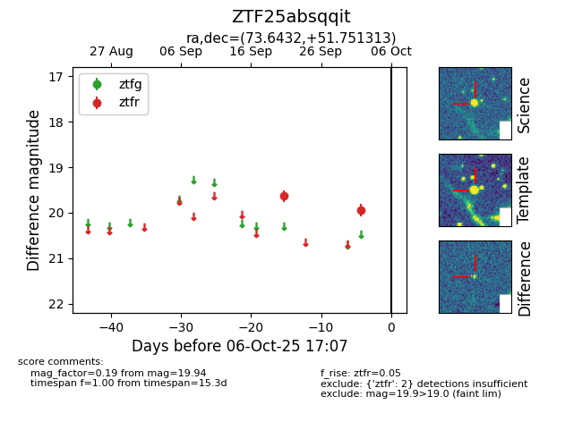

FINK: ZTF25absqqit
Lasair: ZTF25absqqit
ALeRCE: ZTF25absqqit
ZTF25absqqit (ztf,fink)
equatorial (ra, dec) = (73.6432,+51.75131)
galactic (l, b) = (155.7846,+5.11560)

last ztfr=19.94
2 ztfr detections